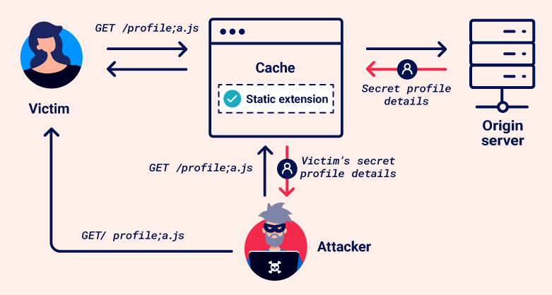
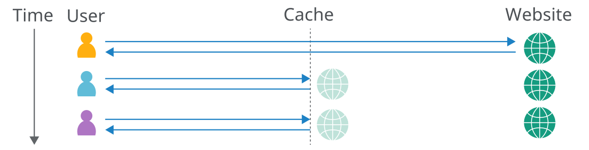

Web cache deception
Web cache deception is a vulnerability that enables an attacker to trick a web cache into storing sensitive, dynamic content. It's caused by discrepancies between how the cache server and origin server handle requests.
In a web cache deception attack, an attacker persuades a victim to visit a malicious URL, inducing the victim's browser to make an ambiguous request for sensitive content. The cache misinterprets this as a request for a static resource and stores the response. The attacker can then request the same URL to access the cached response, gaining unauthorized access to private information.

Note
It's important to distinguish web cache deception from web cache poisoning. While both exploit caching mechanisms, they do so in different ways:
- Web cache poisoning manipulates cache keys to inject malicious content into a cached response, which is then served to other users.
- Web cache deception exploits cache rules to trick the cache into storing sensitive or private content, which the attacker can then access.
For more detailed information on web cache poisoning, refer to our Web cache poisoning Academy topic.
PortSwigger research
PortSwigger has developed several deliberately vulnerable labs that you can use to safely practice what you've learned against realistic targets. Many of these labs are based on original research first presented at Black Hat USA 2024.
For more details, please refer to the accompanying whitepaper: Gotta Cache 'em all: bending the rules of web cache exploitation.
Web caches
A web cache is a system that sits between the origin server and the user. When a client requests a static resource, the request is first directed to the cache. If the cache doesn't contain a copy of the resource (known as a cache miss), the request is forwarded to the origin server, which processes and responds to the request. The response is then sent to the cache before being sent to the user. The cache uses a preconfigured set of rules to determine whether to store the response.
When a request for the same static resource is made in the future, the cache serves the stored copy of the response directly to the user (known as a cache hit).

Caching has become a common and crucial aspect of delivering web content, particularly with the widespread use of Content Delivery Networks (CDNs), which use caching to store copies of content on distributed servers all over the world. CDNs speed up delivery by serving content from the server closest to the user, reducing load times by minimizing the distance data travels.
Cache keys
When the cache receives an HTTP request, it must decide whether there is a cached response that it can serve directly, or whether it has to forward the request to the origin server. The cache makes this decision by generating a 'cache key' from elements of the HTTP request. Typically, this includes the URL path and query parameters, but it can also include a variety of other elements like headers and content type.
If the incoming request's cache key matches that of a previous request, the cache considers them to be equivalent and serves a copy of the cached response.
Note
To learn how to manipulate cache keys to inject malicious content into the cache, see our Web cache poisoning Academy topic.
Cache rules
Cache rules determine what can be cached and for how long. Cache rules are often set up to store static resources, which generally don't change frequently and are reused across multiple pages. Dynamic content is not cached as it's more likely to contain sensitive information, ensuring users get the latest data directly from the server.
Web cache deception attacks exploit how cache rules are applied, so it's important to know about some different types of rules, particularly those based on defined strings in the URL path of the request. For example:
- Static file extension rules - These rules match the file extension of the requested resource, for example
.cssfor stylesheets or.jsfor JavaScript files. - Static directory rules - These rules match all URL paths that start with a specific prefix. These are often used to target specific directories that contain only static resources, for example
/staticor/assets. - File name rules - These rules match specific file names to target files that are universally required for web operations and change rarely, such as
robots.txtandfavicon.ico.
Caches may also implement custom rules based on other criteria, such as URL parameters or dynamic analysis.
Constructing a web cache deception attack
Generally speaking, constructing a basic web cache deception attack involves the following steps:
- Identify a target endpoint that returns a dynamic response containing sensitive information. Review responses in Burp, as some sensitive information may not be visible on the rendered page. Focus on endpoints that support the
GET,HEAD, orOPTIONSmethods as requests that alter the origin server's state are generally not cached. -
Identify a discrepancy in how the cache and origin server parse the URL path. This could be a discrepancy in how they:
- Map URLs to resources.
- Process delimiter characters.
- Normalize paths.
- Craft a malicious URL that uses the discrepancy to trick the cache into storing a dynamic response. When the victim accesses the URL, their response is stored in the cache. Using Burp, you can then send a request to the same URL to fetch the cached response containing the victim's data. Avoid doing this directly in the browser as some applications redirect users without a session or invalidate local data, which could hide a vulnerability.
We'll explore some different approaches for constructing a web cache deception attack.
Using a cache buster
While testing for discrepancies and crafting a web cache deception exploit, make sure that each request you send has a different cache key. Otherwise, you may be served cached responses, which will impact your test results.
As both URL path and any query parameters are typically included in the cache key, you can change the key by adding a query string to the path and changing it each time you send a request. Automate this process using the Param Miner extension. To do this, once you've installed the extension, click on the top-level Param miner > Settings menu, then select Add dynamic cachebuster. Burp now adds a unique query string to every request that you make. You can view the added query strings in the Logger tab.
Detecting cached responses
During testing, it's crucial that you're able to identify cached responses. To do so, look at response headers and response times.
Various response headers may indicate that it is cached. For example:
- The
X-Cacheheader provides information about whether a response was served from the cache. Typical values include:X-Cache: hit- The response was served from the cache.X-Cache: miss- The cache did not contain a response for the request's key, so it was fetched from the origin server. In most cases, the response is then cached. To confirm this, send the request again to see whether the value updates to hit.X-Cache: dynamic- The origin server dynamically generated the content. Generally this means the response is not suitable for caching.X-Cache: refresh- The cached content was outdated and needed to be refreshed or revalidated.
- The
Cache-Controlheader may include a directive that indicates caching, likepublicwith amax-agehigher than0. Note that this only suggests that the resource is cacheable. It isn't always indicative of caching, as the cache may sometimes override this header.
If you notice a big difference in response time for the same request, this may also indicate that the faster response is served from the cache.
Exploiting static extension cache rules
Cache rules often target static resources by matching common file extensions like .css or .js. This is the default behavior in most CDNs.
If there are discrepancies in how the cache and origin server map the URL path to resources or use delimiters, an attacker may be able to craft a request for a dynamic resource with a static extension that is ignored by the origin server but viewed by the cache.
Path mapping discrepancies
URL path mapping is the process of associating URL paths with resources on a server, such as files, scripts, or command executions. There are a range of different mapping styles used by different frameworks and technologies. Two common styles are traditional URL mapping and RESTful URL mapping.
Traditional URL mapping represents a direct path to a resource located on the file system. Here's a typical example:
http://example.com/path/in/filesystem/resource.html
http://example.compoints to the server./path/in/filesystem/represents the directory path in the server's file system.resource.htmlis the specific file being accessed.
In contrast, REST-style URLs don't directly match the physical file structure. They abstract file paths into logical parts of the API:
http://example.com/path/resource/param1/param2
http://example.compoints to the server./path/resource/is an endpoint representing a resource.param1andparam2are path parameters used by the server to process the request.
Discrepancies in how the cache and origin server map the URL path to resources can result in web cache deception vulnerabilities. Consider the following example:
http://example.com/user/123/profile/wcd.css
- An origin server using REST-style URL mapping may interpret this as a request for the
/user/123/profileendpoint and returns the profile information for user123, ignoringwcd.cssas a non-significant parameter. - A cache that uses traditional URL mapping may view this as a request for a file named
wcd.csslocated in the/profiledirectory under/user/123. It interprets the URL path as/user/123/profile/wcd.css. If the cache is configured to store responses for requests where the path ends in.css, it would cache and serve the profile information as if it were a CSS file.
Exploiting path mapping discrepancies
To test how the origin server maps the URL path to resources, add an arbitrary path segment to the URL of your target endpoint. If the response still contains the same sensitive data as the base response, it indicates that the origin server abstracts the URL path and ignores the added segment. For example, this is the case if modifying /api/orders/123 to /api/orders/123/foo still returns order information.
To test how the cache maps the URL path to resources, you'll need to modify the path to attempt to match a cache rule by adding a static extension. For example, update /api/orders/123/foo to /api/orders/123/foo.js. If the response is cached, this indicates:
- That the cache interprets the full URL path with the static extension.
- That there is a cache rule to store responses for requests ending in
.js.
Caches may have rules based on specific static extensions. Try a range of extensions, including .css, .ico, and .exe.
You can then craft a URL that returns a dynamic response that is stored in the cache. Note that this attack is limited to the specific endpoint that you tested, as the origin server often has different abstraction rules for different endpoints.
Note
Burp Scanner automatically detects web cache deception vulnerabilities that are caused by path mapping discrepancies during audits. You can also use the Web Cache Deception Scanner BApp to detect misconfigured web caches.
Delimiter discrepancies
Delimiters specify boundaries between different elements in URLs. The use of characters and strings as delimiters is generally standardized. For example, ? is generally used to separate the URL path from the query string. However, as the URI RFC is quite permissive, variations still occur between different frameworks or technologies.
Discrepancies in how the cache and origin server use characters and strings as delimiters can result in web cache deception vulnerabilities. Consider the example /profile;foo.css:
-
The Java Spring framework uses the
;character to add parameters known as matrix variables. An origin server that uses Java Spring would therefore interpret;as a delimiter. It truncates the path after/profileand returns profile information. -
Most other frameworks don't use
;as a delimiter. Therefore, a cache that doesn't use Java Spring is likely to interpret;and everything after it as part of the path. If the cache has a rule to store responses for requests ending in.css, it might cache and serve the profile information as if it were a CSS file.
The same is true for other characters that are used inconsistently between frameworks or technologies. Consider these requests to an origin server running the Ruby on Rails framework, which uses . as a delimiter to specify the response format:
/profile- This request is processed by the default HTML formatter, which returns the user profile information./profile.css- This request is recognized as a CSS extension. There isn't a CSS formatter, so the request isn't accepted and an error is returned./profile.ico- This request uses the.icoextension, which isn't recognized by Ruby on Rails. The default HTML formatter handles the request and returns the user profile information. In this situation, if the cache is configured to store responses for requests ending in.ico, it would cache and serve the profile information as if it were a static file.
Encoded characters may also sometimes be used as delimiters. For example, consider the request
/profile%00foo.js:
-
The OpenLiteSpeed server uses the encoded null
%00character as a delimiter. An origin server that uses OpenLiteSpeed would therefore interpret the path as/profile. -
Most other frameworks respond with an error if
%00is in the URL. However, if the cache uses Akamai or Fastly, it would interpret%00and everything after it as the path.
Exploiting delimiter discrepancies
You may be able to use a delimiter discrepancy to add a static extension to the path that is viewed by the cache, but not the origin server. To do this, you'll need to identify a character that is used as a delimiter by the origin server but not the cache.
Firstly, find characters that are used as delimiters by the origin server. Start this process by adding an arbitrary string to the URL of your target endpoint. For example, modify /settings/users/list to /settings/users/listaaa. You'll use this response as a reference when you start testing delimiter characters.
Note
If the response is identical to the original response, this indicates that the request is being redirected. You'll need to choose a different endpoint to test.
Next, add a possible delimiter character between the original path and the arbitrary string, for example /settings/users/list;aaa:
- If the response is identical to the base response, this indicates that the
;character is used as a delimiter and the origin server interprets the path as/settings/users/list. - If it matches the response to the path with the arbitrary string, this indicates that the
;character isn't used as a delimiter and the origin server interprets the path as/settings/users/list;aaa.
Once you've identified delimiters that are used by the origin server, test whether they're also used by the cache. To do this, add a static extension to the end of the path. If the response is cached, this indicates:
- That the cache doesn't use the delimiter and interprets the full URL path with the static extension.
- That there is a cache rule to store responses for requests ending in
.js.
Make sure to test all ASCII characters and a range of common extensions, including .css, .ico, and .exe. We've provided a list of potential delimiter characters to get you started in the labs, see the
Web cache deception lab delimiter list. Use Burp Intruder to quickly test these characters. To prevent Burp Intruder from encoding the delimiter characters, turn off Burp Intruder's automated character encoding under Payload encoding in the Payloads side panel.
You can then construct an exploit that triggers the static extension cache rule. For example, consider the payload /settings/users/list;aaa.js. The origin server uses ; as a delimiter:
- The cache interprets the path as:
/settings/users/list;aaa.js - The origin server interprets the path as:
/settings/users/list
The origin server returns the dynamic profile information, which is stored in the cache.
Because delimiters are generally used consistently within each server, you can often use this attack on many different endpoints.
Note
Some delimiter characters may be processed by the victim's browser before it forwards the request to the cache. This means that some delimiters can't be used in an exploit. For example, browsers URL-encode characters like {, }, <, and >, and use # to truncate the path.
If the cache or origin server decodes these characters, it may be possible to use an encoded version in an exploit.
Delimiter decoding discrepancies
Websites sometimes need to send data in the URL that contains characters that have a special meaning within URLs, such as delimiters. To ensure these characters are interpreted as data, they are usually encoded. However, some parsers decode certain characters before processing the URL. If a delimiter character is decoded, it may then be treated as a delimiter, truncating the URL path.
Differences in which delimiter characters are decoded by the cache and origin server can result in discrepancies in how they interpret the URL path, even if they both use the same characters as delimiters. Consider the example /profile%23wcd.css, which uses the URL-encoded # character:
-
The origin server decodes
%23to#. It uses#as a delimiter, so it interprets the path as/profileand returns profile information. -
The cache also uses the
#character as a delimiter, but doesn't decode%23. It interprets the path as/profile%23wcd.css. If there is a cache rule for the.cssextension it will store the response.
In addition, some cache servers may decode the URL and then forward the request with the decoded characters. Others first apply cache rules based on the encoded URL, then decode the URL and forward it to the next server. These behaviors can also result in discrepancies in the way cache and origin server interpret the URL path. Consider the example /myaccount%3fwcd.css:
-
The cache server applies the cache rules based on the encoded path
/myaccount%3fwcd.cssand decides to store the response as there is a cache rule for the.cssextension. It then decodes%3fto?and forwards the rewritten request to the origin server. -
The origin server receives the request
/myaccount?wcd.css. It uses the?character as a delimiter, so it interprets the path as/myaccount.
Exploiting delimiter decoding discrepancies
You may be able to exploit a decoding discrepancy by using an encoded delimiter to add a static extension to the path that is viewed by the cache, but not the origin server.
Use the same testing methodology you used to identify and exploit delimiter discrepancies, but use a range of encoded characters. Make sure that you also test encoded non-printable characters, particularly %00, %0A and %09. If these characters are decoded they can also truncate the URL path.
Exploiting static directory cache rules
It's common practice for web servers to store static resources in specific directories. Cache rules often target these directories by matching specific URL path prefixes, like /static, /assets, /scripts, or /images. These rules can also be vulnerable to web cache deception.
Note
To exploit static directory cache rules, you'll need to understand the basics of path traversal attacks. For more information, see our Path traversal Academy topic.
Normalization discrepancies
Normalization involves converting various representations of URL paths into a standardized format. This sometimes includes decoding encoded characters and resolving dot-segments, but this varies significantly from parser to parser.
Discrepancies in how the cache and origin server normalize the URL can enable an attacker to construct a path traversal payload that is interpreted differently by each parser. Consider the example /static/..%2fprofile:
-
An origin server that decodes slash characters and resolves dot-segments would normalize the path to
/profileand return profile information. -
A cache that doesn't resolve dot-segments or decode slashes would interpret the path as
/static/..%2fprofile. If the cache stores responses for requests with the/staticprefix, it would cache and serve the profile information.
As shown in the above example, each dot-segment in the path traversal sequence needs to be encoded. Otherwise, the victim's browser will resolve it before forwarding the request to the cache. Therefore, an exploitable normalization discrepancy requires that either the cache or origin server decodes characters in the path traversal sequence as well as resolving dot-segments.
Detecting normalization by the origin server
To test how the origin server normalizes the URL path, send a request to a non-cacheable resource with a path traversal sequence and an arbitrary directory at the start of the path. To choose a non-cacheable resource, look for a non-idempotent method like POST. For example, modify /profile to /aaa/..%2fprofile:
- If the response matches the base response and returns the profile information, this indicates that the path has been interpreted as
/profile. The origin server decodes the slash and resolves the dot-segment. - If the response doesn't match the base response, for example returning a
404error message, this indicates that the path has been interpreted as/aaa/..%2fprofile. The origin server either doesn't decode the slash or resolve the dot-segment.
Note
When testing for normalization, start by encoding only the second slash in the dot-segment. This is important because some CDNs match the slash following the static directory prefix.
You can also try encoding the full path traversal sequence, or encoding a dot instead of the slash. This can sometimes impact whether the parser decodes the sequence.
Detecting normalization by the cache server
You can use a few different methods to test how the cache normalizes the path. Start by identifying potential static directories. In Proxy > HTTP history, look for requests with common static directory prefixes and cached responses. Focus on static resources by setting the HTTP history filter to only show messages with 2xx responses and script, images, and CSS MIME types.
You can then choose a request with a cached response and resend the request with a path traversal sequence and an arbitrary directory at the start of the static path. Choose a request with a response that contains evidence of being cached. For example, /aaa/..%2fassets/js/stockCheck.js:
- If the response is no longer cached, this indicates that the cache isn't normalizing the path before mapping it to the endpoint. It shows that there is a cache rule based on the
/assetsprefix. - If the response is still cached, this may indicate that the cache has normalized the path to
/assets/js/stockCheck.js.
You can also add a path traversal sequence after the directory prefix. For example, modify /assets/js/stockCheck.js to /assets/..%2fjs/stockCheck.js:
- If the response is no longer cached, this indicates that the cache decodes the slash and resolves the dot-segment during normalization, interpreting the path as
/js/stockCheck.js. It shows that there is a cache rule based on the/assetsprefix. - If the response is still cached, this may indicate that the cache hasn't decoded the slash or resolved the dot-segment, interpreting the path as
/assets/..%2fjs/stockCheck.js.
Note that in both cases, the response may be cached due to another cache rule, such as one based on the file extension. To confirm that the cache rule is based on the static directory, replace the path after the directory prefix with an arbitrary string. For example, /assets/aaa. If the response is still cached, this confirms the cache rule is based on the /assets prefix. Note that if the response doesn't appear to be cached, this doesn't necessarily rule out a static directory cache rule as sometimes 404 responses aren't cached.
Note
It's possible that you may not be able to definitively determine whether the cache decodes dot-segments and decodes the URL path without attempting an exploit.
Exploiting normalization by the origin server
If the origin server resolves encoded dot-segments, but the cache doesn't, you can attempt to exploit the discrepancy by constructing a payload according to the following structure:
/<static-directory-prefix>/..%2f<dynamic-path>
For example, consider the payload /assets/..%2fprofile:
- The cache interprets the path as:
/assets/..%2fprofile - The origin server interprets the path as:
/profile
The origin server returns the dynamic profile information, which is stored in the cache.
Exploiting normalization by the cache server
If the cache server resolves encoded dot-segments but the origin server doesn't, you can attempt to exploit the discrepancy by constructing a payload according to the following structure:
/<dynamic-path>%2f%2e%2e%2f<static-directory-prefix>Note
When exploiting normalization by the cache server, encode all characters in the path traversal sequence. Using encoded characters helps avoid unexpected behavior when using delimiters, and there's no need to have an unencoded slash following the static directory prefix since the cache will handle the decoding.
In this situation, path traversal alone isn't sufficient for an exploit. For example, consider how the cache and origin server interpret the payload /profile%2f%2e%2e%2fstatic:
- The cache interprets the path as:
/static - The origin server interprets the path as:
/profile%2f%2e%2e%2fstatic
The origin server is likely to return an error message instead of profile information.
To exploit this discrepancy, you'll need to also identify a delimiter that is used by the origin server but not the cache. Test possible delimiters by adding them to the payload after the dynamic path:
- If the origin server uses a delimiter, it will truncate the URL path and return the dynamic information.
- If the cache doesn't use the delimiter, it will resolve the path and cache the response.
For example, consider the payload /profile;%2f%2e%2e%2fstatic. The origin server uses ; as a delimiter:
- The cache interprets the path as:
/static - The origin server interprets the path as:
/profile
The origin server returns the dynamic profile information, which is stored in the cache. You can therefore use this payload for an exploit.
Exploiting file name cache rules
Certain files such as robots.txt, index.html, and favicon.ico are common files found on web servers. They're often cached due to their infrequent changes. Cache rules target these files by matching the exact file name string.
To identify whether there is a file name cache rule, send a GET request for a possible file and see if the response is cached.
Detecting normalization discrepancies
To test how the origin server normalizes the URL path, use the same method that you used for static directory cache rules. For more information, see Detecting normalization by the origin server.
To test how the cache normalizes the URL path, send a request with a path traversal sequence and an arbitrary directory before the file name. For example, /profile%2f%2e%2e%2findex.html:
- If the response is cached, this indicates that the cache normalizes the path to
/index.html. - If the response isn't cached, this indicates that the cache doesn't decode the slash and resolve the dot-segment, interpreting the path as
/profile%2f%2e%2e%2findex.html.
Exploiting normalization discrepancies
Because the response is only cached if the request matches the exact file name, you can only exploit a discrepancy where the cache server resolves encoded dot-segments, but the origin server doesn't. Use the same method as for static directory cache rules - simply replace the static directory prefix with the file name. For more information, see Exploiting normalization by the cache server.
Preventing web cache deception vulnerabilities
You can take a range of steps to prevent web cache deception vulnerabilities:
- Always use
Cache-Controlheaders to mark dynamic resources, set with the directivesno-storeandprivate. - Configure your CDN settings so that your caching rules don't override the
Cache-Controlheader. - Activate any protection that your CDN has against web cache deception attacks. Many CDNs enable you to set a cache rule that verifies that the response
Content-Typematches the request's URL file extension. For example, Cloudflare's Cache Deception Armor. - Verify that there aren't any discrepancies between how the origin server and the cache interpret URL paths.